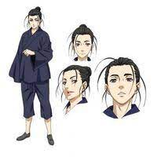

Ye Wong (王也)

WangYe is a character in the Chinese manga Under One Person and its derivative works.
He is the disciple of Wudang Mountain, who was later expelled from his sect.
He is also the heir to one of the Eight Marvelous Techniques, known as the Wind-After Secret Door.
Three Reasons
- He is a character who lives freely, doesn't hold back, and possesses energy when facing challenges.
- He has the ability to forsake a life of readily attainable affluence in pursuit of his own ideals.
- He advises and guides people but never refrains from interfering in others' affairs.